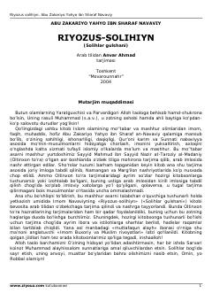

RImom Navaviy qalamiga mansub mashhur hadislar to'plami.
Ushbu asar islom olamining mashhur olimi Imom Navaviy tomonidan yozilgan bo'lib, mo'min-musulmonlarni hidoyatga chorlash va axloqini yuksaltirishga xizmat qiladi. Kitob Qur'oni karim va Sunnati nabaviyya asosida tuzilgan bo'lib, unda turli mavzulardagi sahih hadislar jamlangan.